13 SVG loops · Luna 6 Max · maxxing
Trece loops SVG originales, uno por estilo. No hay video, ni GIF, ni stock: hay una escena, una tipografía y una duración. Abrí cualquiera y dejalo vivir un minuto.












